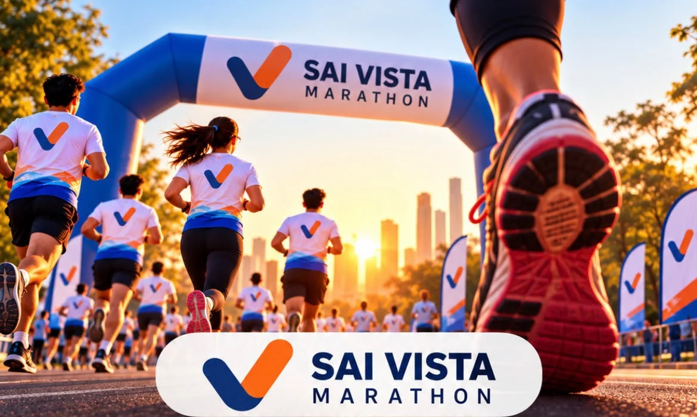

RAHATANI · PCMC · PUNE
Sai Vista Marathon 2026
A 3K or 5K community run. One shared starting line.
Join neighbours, families and friends on Sunday, 29 November 2026. Report at 5:45 AM IST at Sai Vista Multipurpose Court, Rahatani, Pimpri-Chinchwad, Pune. The run starts and finishes at Sai Vista Society.
Check availability and registerSign-in is required for registration. You can read this event information without signing in.

Distances, entry fees and the registration deadline
| Distance | Fee per participant | Included |
|---|---|---|
| 3 km | ₹149 | T-shirt, medal, breakfast and e-certificate |
| 5 km | ₹199 | T-shirt, medal, breakfast and e-certificate |
Following requests from residents, registration has been extended until , or until 200 total participant registrations are submitted, whichever comes first. This is one combined limit across both distances, including entries awaiting payment verification. Check current availability in the registration form before paying.
Each runner needs a separate registration and payment. A submission remains pending until the committee verifies payment; a BIB confirmation follows by email. Keep unrelated account balances and financial details out of your payment screenshot.
The route: Aundh–Ravet BRTS Road
The 3K and 5K courses start and finish at Sai Vista Society and follow Aundh–Ravet BRTS Road. The 3K course turns around at 1.5 km; the 5K course turns around at 2.5 km. The supplied map is for illustration: follow the on-site marshals and race-day briefing.
Explore the route in the community portal · View the full route map
Race-day schedule
All times below are Indian Standard Time (IST). Please arrive at the reporting time, rather than the flag-off time.
| Time | Activity | 5 km | 3 km |
|---|---|---|---|
| 05:45 AM | Reporting time | Arrival & BIB check-in | Arrival & BIB check-in |
| 06:00 AM | Zumba & warm-up | Group warm-up session | Group warm-up session |
| 06:20 AM | Route instructions | Safety & route briefing | Safety & route briefing |
| 06:30 AM | 5 km flag-off | Race start | Line up at start area |
| 06:40 AM | 3 km flag-off | On course | Race start |
| 07:15–07:30 AM | Finish & refreshments | Medals, hydration & snacks | Medals, hydration & snacks |
| 07:40 AM | Trophies & awards | Trophies & awards | Trophies & awards |
Children, families and co-ordinators
All ages are welcome. Children aged 12 and under must be accompanied by a parent throughout the run. Participants under 18 also require a parent or guardian’s name and consent. Friends and relatives from outside Sai Vista can enter “Visitor” for the flat field in the participant form.
If you are helping as a co-ordinator rather than registering as a runner, select “I am a co-ordinator” in the existing form. Provide your name, verified sign-in email, phone number and T-shirt size. Co-ordinators do not pay, upload a payment screenshot, receive a participant BIB or count towards the 200 participant places.
T-shirt sizes and BIB name changes
Use the supplied adult T-shirt size chart or kids’ size chart before choosing. Participants under 16 can select numeric kids’ sizes 20–36 after entering their date of birth. Adult letter sizes remain available where appropriate.
Sign in with the email used for registration to view your own marathon entries. You can edit only the T-shirt size and name printed on the BIB until 14 November 2026, 5:00 PM IST. After that, entries are read-only. No T-shirt exchange, trial or cancellation is available.
Questions or sponsorship enquiries?
Contact Paresh on 8149525915 for marathon or payment questions. Businesses interested in supporting the run can read our Sai Vista Marathon sponsorship information. Learn more about the Sai Vista Cultural Committee.
Open registration and current availabilityUpdated by Sai Vista Cultural Committee. Contact us to confirm details or request a correction.